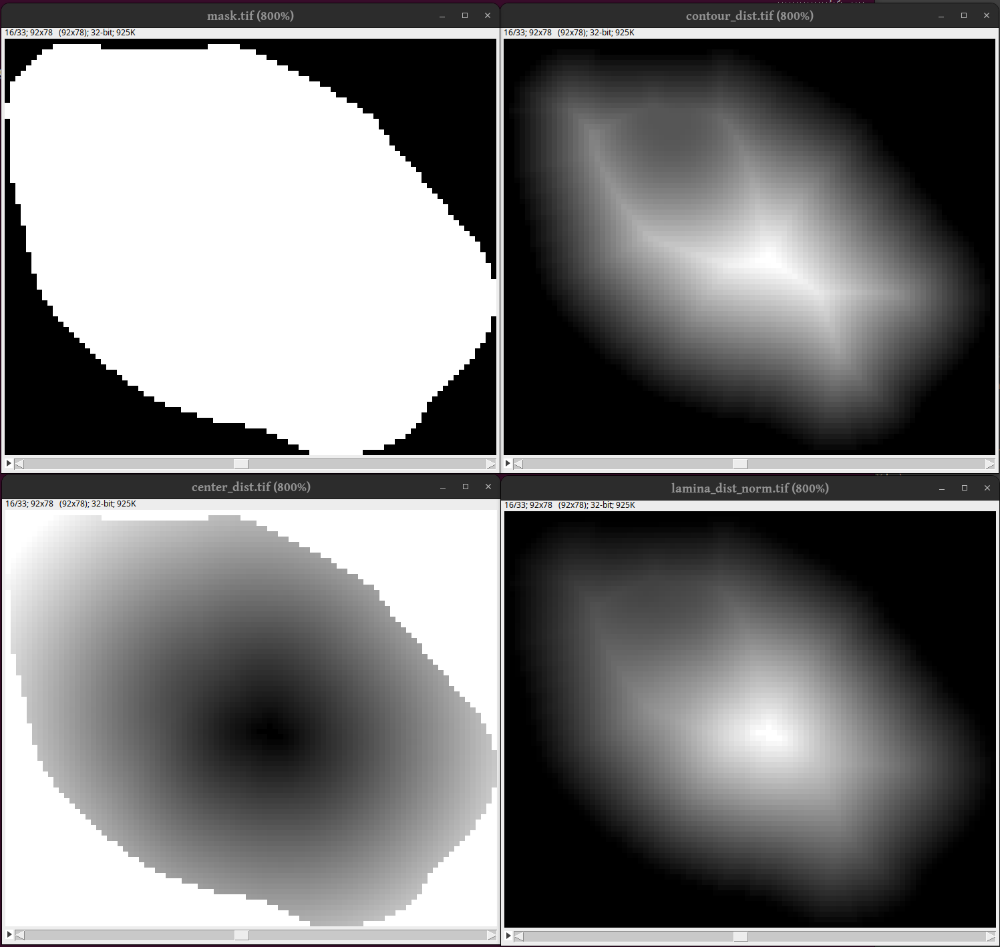

Details
All RadIAnTkit tools are accessible from the terminal using the
radiantkit entry point.
usage: radiantkit [-h] [--version] sub_command ...
Run radiantkit -h to access the help page directly in the terminal.
nd2_to_tiff
Use radiantkit nd2_to_tiff to convert one or more nd2 files into single
channel tiff images. You can specify multiple nd2 files, or multiple
folders containing nd2 files, by separating them with a space. When a
folder is specified as input, all files matching the “inreg” regular
expression are converted. You can change the regular expression to
convert a specific files subset.
In the case of 3+D images, the script also checks for consistent deltaZ distance across consecutive 2D slices (i.e., dZ). If the distance is consitent, it is used to set the tiff image dZ metadata. Otherwise, the script tries to guess the correct dZ and reports it in the log. If the reported dZ is wrong, please enforce the correct one using the -Z option. If a correct dZ cannot be automatically guessed, the field of view is skipped and a warning is issued to the user. Use the –fields and -Z options to convert the skipped field(s).
File naming
The output tiff file names follow the specified template (-T). A
template is a string including a series of “seeds” that are replaced by
the corresponding values when writing the output file. Available seeds
are: - ${channel_name} : channel name, lower-cased. -
${channel_id} : channel ID (number). - ${series_id} : series ID
(number). - ${dimensions} : number of dimensions, followed by “D”. -
${axes_order} : axes order (e.g., “TZYX”).
Leading 0s are added up to 3 digits to any ID seed.
The default template is “${channel_name}_${series_id}”. Hence, when
writing the 3rd series of the “a488” channel, the output file name would
be: “a488_003.tiff”.
usage: radiantkit nd2_to_tiff [-h] [--outdir DIRPATH] [--fields STRING]
[--channels STRING [STRING ...]]
[--deltaZ FLOAT] [--inreg REGEXP]
[--template STRING] [--compressed] [-i] [-l]
[--version]
input [input ...]
Convert one or more nd2 files into single channel tiff images. You can specify multiple
nd2 files, or multiple folders containing nd2 files, by separating them with a space.
When a folder is specified as input, all files matching the "inreg" regular expression
are converted. You can change the regular expression to convert a specific files subset.
In the case of 3+D images, the script also checks for consistent deltaZ distance across
consecutive 2D slices (i.e., dZ). If the distance is consitent, it is used to set the
tiff image dZ metadata. Otherwise, the script tries to guess the correct dZ and reports
it in the log. If the reported dZ is wrong, please enforce the correct one using the -Z
option. If a correct dZ cannot be automatically guessed, the field of view is skipped
and a warning is issued to the user. Use the --fields and -Z options to convert the
skipped field(s).
# File naming
The output tiff file names follow the specified template (-T). A template is a string
including a series of "seeds" that are replaced by the corresponding values when writing
the output file. Available seeds are:
${channel_name} : channel name, lower-cased.
${channel_id} : channel ID (number).
${series_id} : series ID (number).
${dimensions} : number of dimensions, followed by "D".
${axes_order} : axes order (e.g., "TZYX").
Leading 0s are added up to 3 digits to any ID seed.
The default template is "${channel_name}_${series_id}". Hence, when
writing the 3rd series of the "a488" channel, the output file name would be:
"a488_003.tiff".
Please, remember to escape the "$" when running from command line if using double
quotes, i.e., "\$". Alternatively, use single quotes, i.e., '$'.
positional arguments:
input Path an nd2 file to convert, or to a folder containing
nd2 files. To specify multiple inputs, separate them
with a space.
options:
-h, --help show this help message and exit
--outdir DIRPATH Path to output TIFF folder. Defaults to the input file
basename. This is ignored when input is a folder.
--fields STRING Convert only fields of view specified as when printing
a set of pages. Omit if all fields should be
converted. E.g., '1-2,5,8-9'.
--channels STRING [STRING ...]
Convert only specified channels. Specified as space-
separated channel names. Omit if all channels should
be converted. E.g., 'dapi cy5 a488'.
--version show program's version number and exit
advanced arguments:
--deltaZ FLOAT, -Z FLOAT
If provided (in um), the script does not check delta Z
consistency and instead uses the provided one.
--inreg REGEXP Regular expression to identify input ND2 images.
Default: '^.*\.nd2$'
--template STRING, -T STRING
Template for output file name. See main description
for more details. Default:
'${channel_name}_${series_id}'
--compressed Write compressed TIFF as output. Useful especially for
binary or low-depth (e.g. labeled) images.
-i, --info Show details of input nd2 files and stop (nothing is
converted).
-l, --list List input nd2 files and stop (nothing is converted).
Alternatives
Most likely the software on your microscope can export tiff files directly. If you use that, make sure that there is only one channel per image (and no time series). A general solution is to use FIJI which is available for all major platforms. For linux there is also nd2tool which should be both faster and use less memory than the conversion in radiantkit.
tiff_findoof
usage: radiantkit tiff_findoof [-h] [--output OUTPUT] [--fraction FRACTION]
[--version] [--inreg REGEXP] [--threads NUMBER]
[--intensity-sum] [--rename]
input
Calculate gradient magnitude over Z for every image in the input folder with a
filename matching the --inreg. Use --range to change the in-focus
definition.
positional arguments:
input Path to folder with tiff images.
options:
-h, --help show this help message and exit
--output OUTPUT Path to output tsv file. Default: oof.tsv in input
folder.
--fraction FRACTION Fraction of stack (middle-centered) for in-focus
fields. Default: .5
--version show program's version number and exit
advanced arguments:
--inreg REGEXP Regular expression to identify input TIFF images.
Default: '^(?P<dw_flag>dw_)?([^\.]*\.)?(?P<channel_name
>[^/]*)_(?P<series_id>[0-
9]+)(?P<ext>(_cmle)?(\.[^\.]*)?\.tiff?)$'
--threads NUMBER Number of threads for parallelization. Default: 1
--intensity-sum Use intensity sum instead of gradient magnitude.
--rename Rename out-of-focus images by adding the '.old' suffix.
tiff_segment
The tiff_segment module will segment the nuclei stained in DAPI or similar DNA stain.
usage: radiantkit tiff_segment [-h] [-o DIRPATH] [--outprefix TEXT]
[--outsuffix TEXT] [--neighbour NUMBER]
[--radius MIN_RADIUS MAX_RADIUS]
[--min-Z FRACTION] [--mask-2d DIRPATH]
[--no-clear-XY] [--clear-Z]
[--gaussian GAUSSIAN] [--only-focus]
[--most-objects] [--dilate-fill-erode NUMBER]
[--TCZYX] [--labeled] [--uncompressed]
[--no-rescaling] [--debug] [--silent]
[--inreg REGEXP] [--threads NUMBER] [-y]
[--version]
input
Perform automatic 3D segmentation of TIFF images. The default parameters are
optimized for nuclear DNA staining and voxel size of 0.13x0.13x0.3 uM.
The input images are first identified based on a regular expression matched to
the file name. Then, they are re-scaled (if deconvolved with Huygens software).
Afterwards, a global (Otsu) and local (gaussian) thresholds are applied to
binarize the image in 3D. Finally, holes are filled in 3D and closed to remove
small objects. Finally. objects are filtered based on volume and Z size.
Moreover, objects touching the XY image borders are discarded.
If a folder path is provided with the -2 option, any binary file with name
matching the one of an input image will be combined to the binarized image.
Use the --labeled flag to label identified objects with different intensity
levels. By default, the script generates compressed binary tiff images; use the
--uncompressed flag to generate normal tiff images instead.
Input images that have the specified prefix and suffix are not segmented.
positional arguments:
input Path single tiff image, or to folder containing
deconvolved tiff images.
options:
-h, --help show this help message and exit
-o DIRPATH Path to output TIFF folder. Defaults to the input
folder
--outprefix TEXT Prefix for output binarized images name. Default: ''.
--outsuffix TEXT Suffix for output binarized images name. Default:
'mask'.
--neighbour NUMBER Side of neighbourhood region for adaptig thresholding.
Must be odd. Default: 101
--radius MIN_RADIUS MAX_RADIUS
Filter range of object radii [px]. Default: [10, Inf]
--min-Z FRACTION Minimum stack fraction occupied by an object. Default:
.25
--mask-2d DIRPATH Path to folder with 2D masks with matching name, to
combine with 3D masks.
--no-clear-XY Do not remove objects touching the XY edges of the
stack.
--clear-Z Remove objects touching the bottom/top of the stack.
--gaussian GAUSSIAN Apply a Gaussian low pass filter to the image
--version show program's version number and exit
slice arguments:
--only-focus Export mask for the most in-focus slice only.
--most-objects Export mask only for the slice with most objects.
advanced arguments:
--dilate-fill-erode NUMBER
Number of pixels for dilation/erosion steps in a
dilate-fill-erode operation. Default: 0. Set to 0 to
skip.
--TCZYX Input is TCZYX instead of TZCYX.
--labeled Export masks as labeled instead of binary.
--uncompressed Generate uncompressed TIFF binary masks.
--no-rescaling Do not rescale image even if deconvolved.
--debug Log also debugging messages. Silenced by --silent.
--silent Limits logs to critical events only.
--inreg REGEXP Regular expression to identify input TIFF images.
Default: '^.*\.tiff?$'
--threads NUMBER Number of threads for parallelization. Default: 1
-y, --do-all Do not ask for settings confirmation and proceed.
Alternatives/bypass
If you are not happy with the segmentation results you can use any other program to perform the segmentation. Just make sure to follow the file naming conventions and the later stages of the pipeline will be able to use your custom segmentation masks.
One option to consider is ilastic.
radial_population
This part looks in all nuclei (“particles”) and measures the pixel values and distance to lamina at each pixel in the mask.
In the following image we see to to the top right a cross section of a nuclei mask at plane 16. In the top right we see a cross section of the Euclidean distance transform from the outside and in. As can be seen the distance field has much structure too it. Bottom left: The distance from the center (using the default center definition) which is much smoother. Buttom right: The final distance field which is used in radiantkit.
Below follow the complete options for the radial_population module.
Attention
It is recommended that –slice2d is used in most cases.
Added in version 0.1.1: –slice2d
usage: radiantkit radial_population [-h] [--output OUTPUT] [--aspect Z Y X]
[--axes STRING]
[--center-type {CENTER_OF_MASS,CENTROID,MAX,QUANTILE}]
[--quantile NUMBER] [--mask-prefix TEXT]
[--mask-suffix TEXT] [--bins NUMBER]
[--degree NUMBER] [--slice2d]
[--pickle-name STRING] [--export-instance]
[--import-instance] [--block-side NUMBER]
[--use-labels] [--no-rescaling]
[--uncompressed] [--inreg REGEXP]
[--threads NUMBER] [-y] [--version]
input ref_channel
Generate average radial
profiles for a cell population. Requires a folder containing tiff
images with grayscale intensities and masks with segmented nuclei.
We recommend deconvolving the grayscale images to obtain a better
reconstruction of the radial profile.
Crucial aspect and axes
A radial profile is intended to be a curve with voxel intensity (Y) as
a function of a distance (X). This distance can either be the distance
of a voxel from the nuclear lamina, or from the nuclear center. Here,
the distance from the nuclear lamina is calculated as the euclidean
distance from the background of masks of segmented nuclei. See below,
for multiple definitions of nuclear center, accessible via the
--center-type parameter. The profile is also generated for a normalized
lamina distance, obtain by dividing the absolute lamina distance of a
voxel by the sum of absolute lamina and center distances.
Center definitions:
- Centroid: ...
- Center of Mass: ...
- Quantile: ...
- Maxima: ...
Bins and degree, polynomial fit
Roots
positional arguments:
input Path to folder containing deconvolved tiff images and
masks.
ref_channel Name of channel with DNA staining intensity.
options:
-h, --help show this help message and exit
--output OUTPUT Path to folder where output should be written to.
Defaults to "objects" subfolder in the input
directory.
--version show program's version number and exit
critical arguments:
--aspect Z Y X Physical size of Z, Y and X voxel sides in nm.
Default: 300.0 216.6 216.6
--axes STRING Axes to be used for distance calculation.
--center-type {CENTER_OF_MASS,CENTROID,MAX,QUANTILE}
Type of center for distance normalization. Default:
QUANTILE
--quantile NUMBER Quantile used to identify the center when '--center-
type QUANTILE' is used. A number from 0 to 1 is
expected. Defaults to 1e-N where N is the number of
axes in an image.
--mask-prefix TEXT Prefix for output binarized images name. Default: ''.
--mask-suffix TEXT Suffix for output binarized images name. Default:
'mask'.
--bins NUMBER Number of bins for polynomial fitting. Default: 200.
--degree NUMBER Degree of polynomial fitting. Default: 5.
--slice2d Perform measurements only in one lateral plane. The
plane where each nuclei has the largest cross section
area will be used.
pickle arguments:
--pickle-name STRING Filename for input/output pickle file. Default:
'radiant.pkl'
--export-instance Export pickled series instance.
--import-instance Unpickle instance if pickle file is found.
advanced arguments:
--block-side NUMBER Structural element side for dilation-based background/
foreground measurement. Should be odd. Default: 11.
--use-labels Use labels from masks instead of relabeling.
--no-rescaling Do not rescale image even if deconvolved.
--uncompressed Generate uncompressed TIFF binary masks.
--inreg REGEXP Regular expression to identify input TIFF images. Must
contain 'channel_name' and 'series_id' fields.
Default: '^(?P<dw_flag>dw_)?([^\.]*\.)?(?P<channel_nam
e>[^/]*)_(?P<series_id>[0-
9]+)(?P<ext>(_cmle)?(\.[^\.]*)?\.tiff?)$'
--threads NUMBER Number of threads for parallelization. Default: 1
-y, --do-all Do not ask for settings confirmation and proceed.
report
This module is run as the last step to generate a report based on the data available from the previous steps.
usage: radiantkit report [-h] [--subdir STRING] [--not-root] [--inreg REGEXP]
[--offline] [--version]
input
Long description
positional arguments:
input Path to folder with radiant output.
options:
-h, --help show this help message and exit
--version show program's version number and exit
advanced arguments:
--subdir STRING Name of subfolder for nested search. Default: 'objects'
--not-root Input folder is single-condition (not root folder).
--inreg REGEXP Regular expression to identify input TIFF images. Must
contain 'channel_name' and 'series_id' fields. Default: '^(
?P<dw_flag>dw_)?([^\.]*\.)?(?P<channel_name>[^/]*)_(?P<seri
es_id>[0-9]+)(?P<ext>(_cmle)?(\.[^\.]*)?\.tiff?)$'
--offline Generate report that does not require a live internet
connection to be visualized.